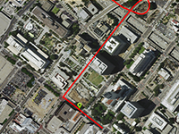

Example of simulation movement marker on the route.
Usage instructions:
Add this script to map GameObject.
Add this script to map GameObject.
MoveMarkerOnRouteExample.cs
/* INFINITY CODE 2013-2016 */
/* http://www.infinity-code.com */
using System.Collections.Generic;
using UnityEngine;
namespace InfinityCode.OnlineMapsExamples
{
[AddComponentMenu("Infinity Code/Online Maps/Examples (API Usage)/MoveMarkerOnRouteExample")]
public class MoveMarkerOnRouteExample : MonoBehaviour
{
/// <summary>
/// Start location name
/// </summary>
public string fromPlace = "Los Angeles";
/// <summary>
/// End location name
/// </summary>
public string toPlace = "Hollywood";
/// <summary>
/// Speed of movement (km/h).
/// </summary>
public float speed = 60;
/// <summary>
/// Move map to marker position
/// </summary>
public bool lookToMarker = false;
/// <summary>
/// Orient marker on next point.
/// </summary>
public bool orientMarkerOnNextPoint = false;
/// <summary>
/// Reference to marker
/// </summary>
private OnlineMapsMarker marker;
/// <summary>
/// Array of route points
/// </summary>
private List<Vector2> points;
/// <summary>
/// Current point index
/// </summary>
private int pointIndex = -1;
/// <summary>
/// Current step progress
/// </summary>
private float progress;
private void Start()
{
// Looking for a route between locations.
OnlineMapsFindDirection.Find(fromPlace, toPlace).OnComplete += OnComplete;
}
private void OnComplete(string response)
{
Debug.Log("OnComplete");
List<OnlineMapsDirectionStep> steps = OnlineMapsDirectionStep.TryParse(response);
if (steps == null)
{
Debug.Log("Something wrong");
Debug.Log(response);
return;
}
// Create a new marker in first point.
marker = OnlineMaps.instance.AddMarker(steps[0].start, "Car");
// Gets points of route.
points = OnlineMapsDirectionStep.GetPoints(steps);
// Draw the route.
OnlineMapsDrawingLine route = new OnlineMapsDrawingLine(points, Color.red, 3);
OnlineMaps.instance.AddDrawingElement(route);
pointIndex = 0;
}
private void Update()
{
if (pointIndex == -1) return;
// Start point
Vector3 p1 = points[pointIndex];
// End point
Vector3 p2 = points[pointIndex + 1];
// Total step distance
float stepDistance = OnlineMapsUtils.DistanceBetweenPoints(p1, p2).magnitude;
// Total step time
float totalTime = stepDistance / speed * 3600;
// Current step progress
progress += Time.deltaTime / totalTime;
if (progress < 1)
{
marker.position = Vector2.Lerp(p1, p2, progress);
// Orient marker
if (orientMarkerOnNextPoint) marker.rotation = 1.25f - OnlineMapsUtils.Angle2D((Vector2)p1, (Vector2)p2) / 360f;
}
else
{
marker.position = p2;
pointIndex++;
progress = 0;
if (pointIndex >= points.Count - 1)
{
Debug.Log("Finish");
pointIndex = -1;
}
else
{
// Orient marker
if (orientMarkerOnNextPoint) marker.rotation = 1.25f - OnlineMapsUtils.Angle2D((Vector2)p2, (Vector2)points[pointIndex + 1]) / 360;
}
}
if (lookToMarker) OnlineMaps.instance.position = marker.position;
if (OnlineMaps.instance.target != OnlineMapsTarget.tileset) OnlineMaps.instance.Redraw();
}
}
}